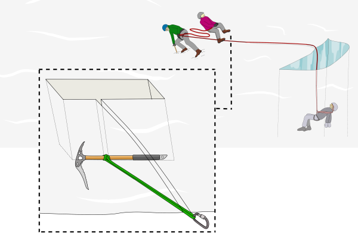

Where to Hitch a Sling on an Axle in Crevasse Rescue - Overkill Analysis
While I was on a glacier yesterday, we were practicing some crevasse rescue operations. The glacier was covered in deep snow. The most common thing to do when a person falls into a crevasse is to firstly secure the person with a glacier sling attached to an axle placed vertically. Then you have to make two fixed points to recover the person with a hoist.
In the case of a glacier exposed with ice, you can simply use ice screws, but in the case of yesterday’s scenario, it is common to dig an axle with a sling coming out and build an anchor from it. I thought that sling placement is not the same along the axle since if, for example, you pull from the top, it can make the axle rotate and the anchor will fail.

This is the first time everything I’ve learned in analysis courses has come useful… and I know that this relation is totally overkill for the practical need: I think it is sufficient to place the sling “where it feels good” and it will not cause any problems. But, as I said before, I want to give a reason to all that “stupid” math I had to learn! It all came to my mind after one guy said to place the≤sling in the horizontal center of mass.
We want to find that specific point where the overall angular momentum is equal to zero, as the following formula says:
[ \vec{M}=\mho \times \vec{\alpha } ]
If m=0 also alfa is equal to zero resulting in no tilting.
f we think about snow, it can be described as a sort of fluid; force then is proportional to the surface area exposed as fluid pressure remains constant. That’s why the center of mass is NOT the point where the axle doesn’t rotate. I like to think about it as somewhat like the “center of area.” As we said before, we need to find the point where M=0 and force can be modeled differentially as:
[ dF=dA*P ]
where P is pressure, dA is the infinitesimal area. The momentum is the force applied to an arm (the point we have to find is x_0). By integrating on the body 𝜎, we find:
[\iint_{\sigma }^{}(x-x_0)dF=\iint_{\sigma }^{}(x-x_0)PdA]
The condition for the body to be static is:
[\iint_{\sigma }^{}(x-x_0)PdA=0]
We can now expand the integral using the linear property:
[\iint_{\sigma }^{}xPdA-\iint_{\sigma }^{}x_0PdA=0] [\iint_{\sigma }^{}xPdA=\iint_{\sigma }^{}x_0PdA]
And since x0 is a fixed number, it can go outside the integral. P is also constans, this is the final result:
[\iint_{\sigma }^{}xPdA=x_0\iint_{\sigma }^{}PdA]
[x_0=\frac{P\iint_{\sigma }^{}xdA}{P\iint_{\sigma }^{}dA}] [x_0=\frac{\iint_{\sigma }^{}xdA}{\iint_{\sigma }^{}dA}]
In other terms the denominator integral is just the surface area exposed to the snow. All calculation have been done assuming that if a force pulls the axle will compact the snow in front of it and behing it is not in contact anymore.
Note how much it resembles the definition of center of mass; in a way, it is the generalization where force derives from surface area. It can be thought of as the point where, for example, a body pulled in the water does not rotate. Obviously, this calculation has been done only in one direction; for a general object with no symmetry, this special point has to be calculated along the three Cartesian vectors and planes.